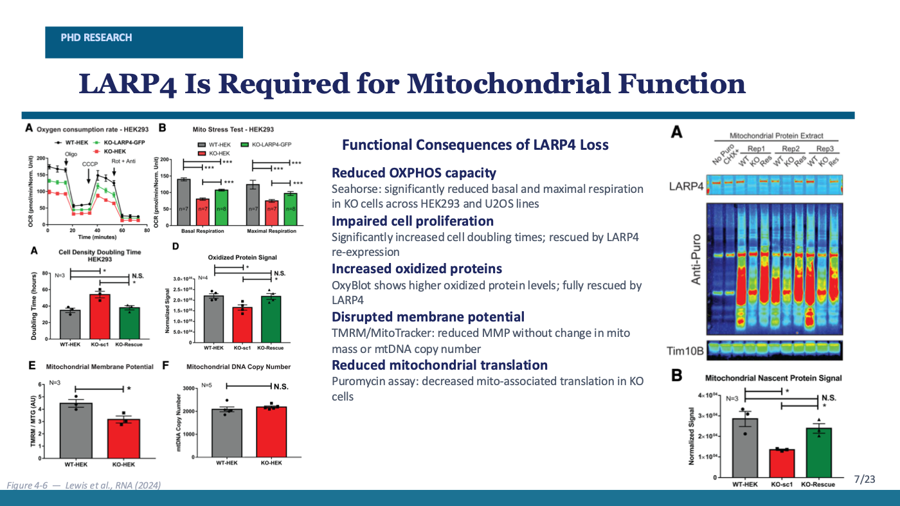
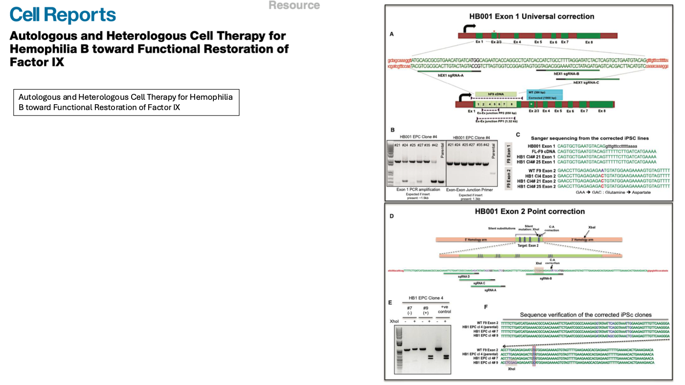
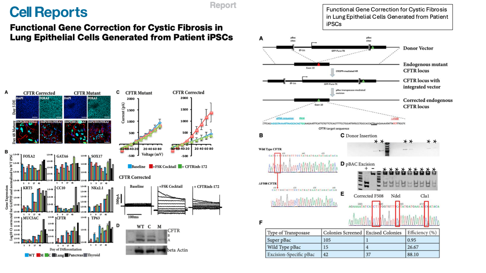
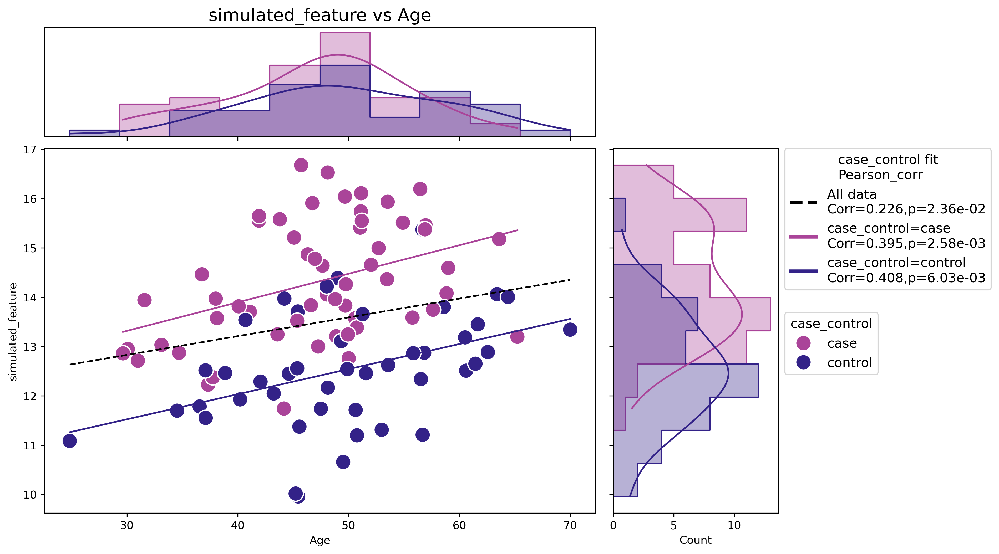
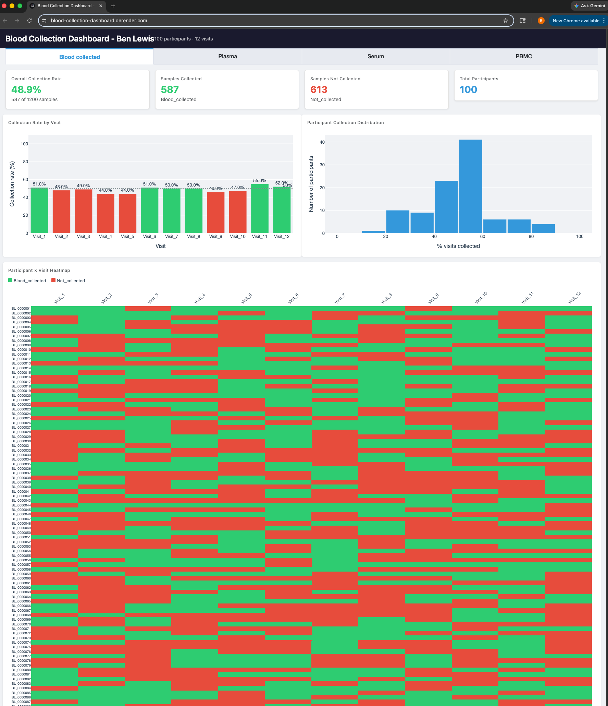
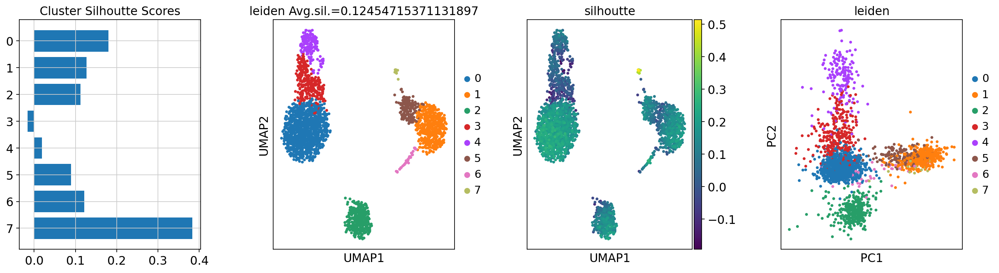
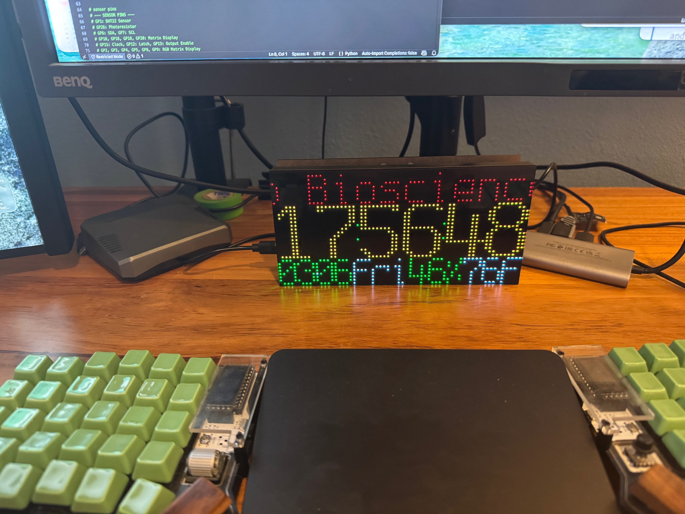

Senior Scientist — Bioinformatics, R&D · Actio Biosciences
Multi-omic biomarker discovery, novel target identification, transcriptomic strategy, and production analysis systems.
Bioinformatics · Multi-omics · RNA biology
I’m Benjamin Mark Lewis, a San Diego bioinformatics scientist working across single-cell and bulk transcriptomics, multi-omic biomarker discovery, therapeutic target identification, and production-grade scientific software.
I’ve spent more than a decade at the interface of experimental and computational biology: CRISPR and iPSC disease models, RNA-binding protein biology, single-cell genomics, translational biomarker strategy, and reproducible analysis systems that move quickly without losing scientific rigor.
A wet-lab foundation gives the computational work teeth: better experimental design, sharper interpretation, and analysis outputs built for real scientific decisions.
Multi-omic biomarker discovery, novel target identification, transcriptomic strategy, and production analysis systems.
Integrative transcriptomics and biomarker analysis supporting therapeutic programs.
Single-cell and multiomic discovery across pipeline and IND-enabling programs.
Doctoral training in Molecular Biology at UC San Diego, focused on RNA-binding protein function in mitochondrial regulation.
University of California, San Diego
RNA-binding protein functions in mitochondrial regulation with Gene Yeo and Tony Hunter.
California Polytechnic State University
Stem cell research, molecular biology techniques, and stem cell-based disease modeling.
California Polytechnic State University
Double-major foundation in biochemistry, microbiology, and experimental biology.

Identifies LARP4 as an RNA-binding regulator of mitochondrial mRNA programs and respiratory function.
DOI
Cell-based therapy approaches using hepatocytes and corrected iPSC-derived hepatocyte-like cells.
DOI
CRISPR correction of CFTR mutation in patient iPSCs and differentiation toward airway epithelial cells.
DOIConnecting molecular readouts, patient stratification, and translational evidence into biomarker strategies that support therapeutic decisions.
Integrating transcriptomic, proteomic, and functional datasets to prioritize biomarkers, mechanisms, and therapeutic hypotheses.
Designing analysis strategies that connect cell states, pathway shifts, target biology, and experimental context.
Python, Nextflow, Dash, and reproducible workflows that turn one-off analyses into durable team infrastructure.
Work projects

AnnData · Python · Visualization
Python data science toolkit for differential analysis and visualization on AnnData objects.
View repository
Clinical operations · Dash · Plotly
Interactive dashboard for monitoring biomarker collection progress in clinical trials, designed to make sample status, cohort coverage, and operational gaps visible at a glance.
View repository
Single-cell · Scanpy · AnnData
Scanpy wrappers and utility functions for end-to-end single-cell RNA-seq workflows.
View repository
Pathways · GSEApy · Reproducibility
Reproducible preranked gene set enrichment analysis across human and mouse collections.
View repositoryFun projects

CircuitPython · Hardware
CircuitPython firmware for a 64×32 matrix clock with RTC, sensors, and menu controls.
View repository
GitHub user
Selected repositories from the original site, focused on computational biology workflows, reproducible analysis, and hardware side projects.

data science tools that operate on anndata objects
wrapper to run GSEApy with reproducible FDR
RNAseq_analysis helpers etc
Mostly scanpy wrappers and tools that use adata objects to streamline single-cell analysis
Example notebooks and tools for working with the ARCHS4 dataset
CircuitPython RGB matrix clock firmware for a Raspberry Pi Pico build.
Scientific leadership across multi-omic biomarker discovery, single-cell and bulk transcriptomic strategy, and production-grade RNA-seq infrastructure.
Multi-omic biomarker discovery and integrative transcriptomics supporting early-stage therapeutic programs.
Cross-functional single-cell and multiomic discovery supporting pipeline and IND-enabling programs.
{
"basics": {
"name": "Benjamin Lewis",
"label": "Senior Scientist | Multi-Omic Discovery",
"location": "San Diego, CA"
},
"work": ["Actio Biosciences", "Aspen Neuroscience"],
"education": ["UC San Diego", "Cal Poly"],
"skills": ["Bioinformatics", "Python", "Nextflow", "Single-cell RNA-seq"]
}Ben promoted to Senior Scientist, Bioinformatics at Actio Biosciences in recognition of scientific leadership, cross-program impact, and strategic contributions to portfolio advancement.
Ben becomes a dad.
Benjamin Mark Lewis joins Actio Biosciences as a Bioinformatics Scientist II.
Benjamin Mark Lewis joins Aspen Neuroscience as a Scientist in Research and Development.
Benjamin Mark Lewis, PhD, successfully completes thesis defense in Molecular Biology at University of California, San Diego, in the labs of Gene Yeo and Tony Hunter.
Targeted help for teams that need biological context, computational rigor, and practical deliverables — from biomarker strategy to RNA-seq workflows and scientific dashboards.
Study design, patient stratification, assay interpretation, and translational evidence packages.
Bulk and single-cell RNA-seq analysis, pathway interpretation, and reproducible handoff materials.
Python, Dash, Nextflow, and data products that make complex biological programs easier to run.